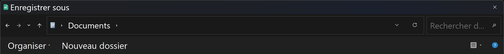
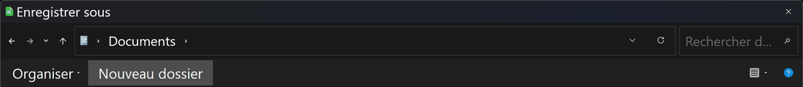
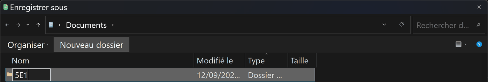
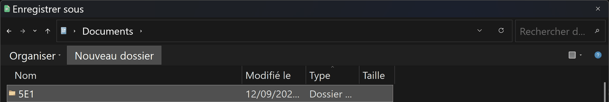
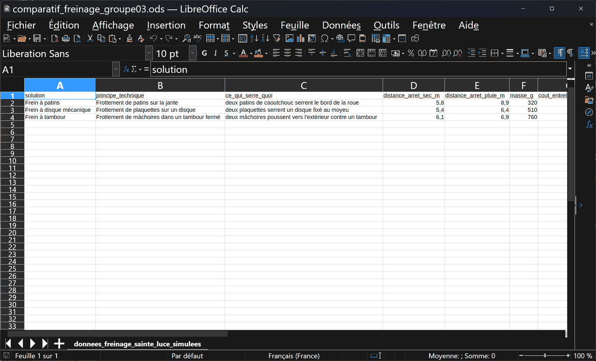
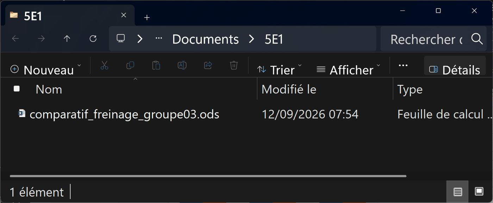
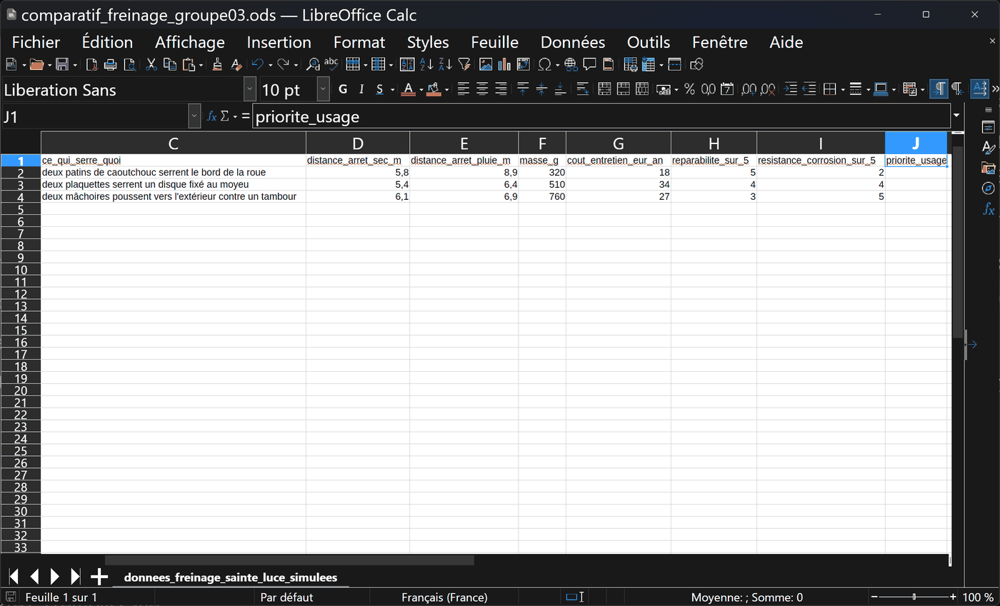
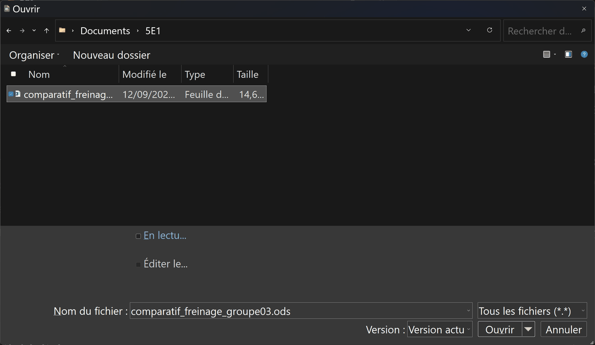
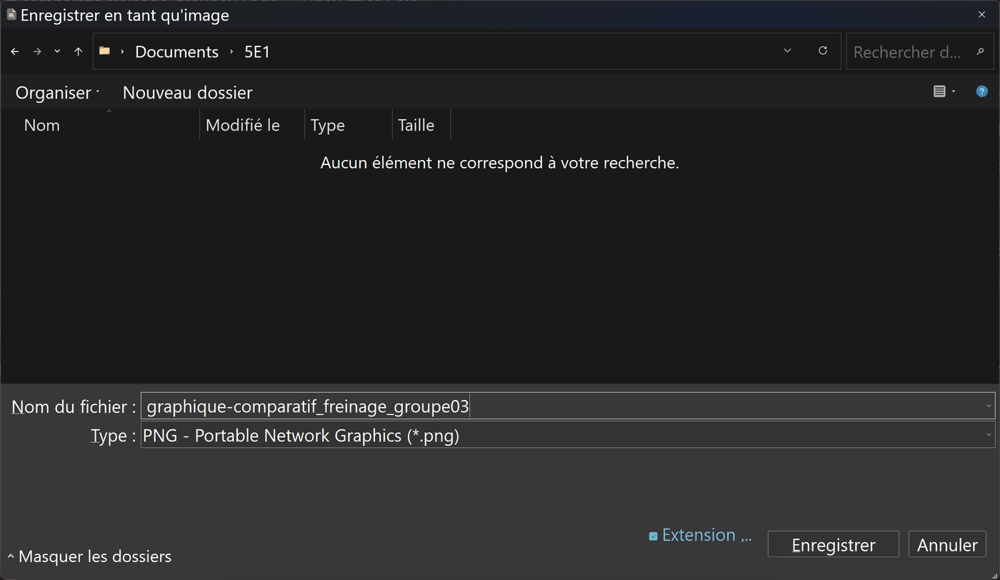

🎫 Billet d'entrée — je vérifie mes outils (5 min, sans note)
Trois questions sur ce que tu sais déjà. Aucune note : c'est un aiguillage.
🎒 Je révise en 3 minutes
Une fonction technique dit ce que l'objet doit faire : elle commence par un verbe à l'infinitif — « arrêter le vélo », « éclairer la salle ». Elle ne dit pas par quel moyen.
⚠️ Ne confonds pas avec « à quoi ça sert ». Cela, c'est le service rendu à l'usager — ce qu'on appelle la fonction d'usage. Un vélo sert à se déplacer ; l'une de ses fonctions techniques est d'arrêter le mouvement.
Le frottement de deux surfaces l'une contre l'autre ralentit le mouvement et chauffe. C'est le phénomène employé par les trois freins de cette séquence — et l'énergie du vélo ne disparaît pas : elle devient de la chaleur.
Comparer, ce n'est pas préférer. C'est juger plusieurs solutions sur les mêmes critères, mesurés de la même façon.
🔎 Activité 1 — Une fonction, trois principes (~40 min)
Comment freiner un vélo ? 4ème partie : le frein V-brake
Alain Le Berre — série « Comment freiner un vélo ? »
Ce qu'il faut regarder
Ne regarde pas le vélo entier. Cherche les deux surfaces qui viennent se toucher : ici, les patins et la jante.
Puis réponds à la seule question qui sépare les trois freins de cette activité : à quelle distance de l'axe de la roue le frottement a-t-il lieu ? Note ta réponse avant de passer à la vidéo suivante.
▶ Ouvrir la vidéoSi la vidéo ne s'ouvre pas
Tu peux faire l'activité entière sans elle. Va voir un vélo — le tien, celui d'un camarade, celui de l'atelier — et fais tourner la roue à la main, puis serre le frein.
- Nomme la surface qui ne bouge pas avec la roue (celle que le frein pousse).
- Nomme la surface qui tourne avec la roue.
- Mesure, à la règle, à quelle distance du centre de la roue ces deux surfaces se touchent.
Ces trois réponses sont exactement ce que la vidéo t'aurait montré. Reporte-les dans le tableau de comparaison.
Comment freiner un vélo ? 7ème partie : le frein à disque hydraulique — Techno collège
Alain Le Berre — série « Comment freiner un vélo ? »
Ce qu'il faut regarder
Ne regarde pas le vélo entier. Cherche les deux surfaces qui viennent se toucher : ici, les plaquettes et le disque.
Puis réponds à la seule question qui sépare les trois freins de cette activité : à quelle distance de l'axe de la roue le frottement a-t-il lieu ? Compare avec ce que tu as noté pour le V-brake.
▶ Ouvrir la vidéoSi la vidéo ne s'ouvre pas
Tu peux faire l'activité entière sans elle. Va voir un vélo — le tien, celui d'un camarade, celui de l'atelier — et fais tourner la roue à la main, puis serre le frein.
- Nomme la surface qui ne bouge pas avec la roue (celle que le frein pousse).
- Nomme la surface qui tourne avec la roue.
- Mesure, à la règle, à quelle distance du centre de la roue ces deux surfaces se touchent.
Ces trois réponses sont exactement ce que la vidéo t'aurait montré. Reporte-les dans le tableau de comparaison.
Comment freiner un vélo ? 6ème partie : le frein à tambour
Alain Le Berre — série « Comment freiner un vélo ? »
Ce qu'il faut regarder
Ne regarde pas le vélo entier. Cherche les deux surfaces qui viennent se toucher : ici, les mâchoires et le tambour — et cette fois elles poussent vers l'extérieur.
Puis réponds à la seule question qui sépare les trois freins de cette activité : à quelle distance de l'axe de la roue le frottement a-t-il lieu ? Range maintenant les trois freins du plus loin de l'axe au plus près.
▶ Ouvrir la vidéoSi la vidéo ne s'ouvre pas
Tu peux faire l'activité entière sans elle. Va voir un vélo — le tien, celui d'un camarade, celui de l'atelier — et fais tourner la roue à la main, puis serre le frein.
- Nomme la surface qui ne bouge pas avec la roue (celle que le frein pousse).
- Nomme la surface qui tourne avec la roue.
- Mesure, à la règle, à quelle distance du centre de la roue ces deux surfaces se touchent.
Ces trois réponses sont exactement ce que la vidéo t'aurait montré. Reporte-les dans le tableau de comparaison.
a) La manipulation — obligatoire
Va au vélo. Actionne le levier de frein lentement, et regarde. Ne démonte rien.
🅰 Version réelle — ce qu'il faut observer (5 min)
- Quand tu serres le levier, qu'est-ce qui bouge ? Suis le câble des doigts.
- Qu'est-ce qui vient toucher quoi ? Nomme les deux pièces qui se touchent.
- Levier relâché, quel écart reste-t-il entre les deux ? Un ou deux millimètres ? Un doigt ?
- Fais tourner la roue à la main, freine : où la chaleur apparaît-elle ? Touche l'endroit — prudemment, après quelques secondes seulement.
⚠️ On ne roule pas pendant cette manipulation, et on ne démonte rien. Le vélo reste à l'arrêt, tenu par un camarade.
🅲 Version sans matériel — le relevé t'est fourni
« En serrant le levier, le câble se tend et fait pivoter deux bras. Chaque bras porte un patin de caoutchouc. Les deux patins viennent pincer le bord de la roue, la partie métallique plate qu'on appelle la jante. Levier relâché, il reste environ 2 mm entre chaque patin et la jante. Après quelques freinages, la jante est tiède à l'endroit où les patins ont frotté. »
🪜 Version étayée — des phrases à compléter
- « Quand on serre le levier, ____ se tend et ____ pivotent. »
- « Les deux pièces qui se touchent sont ____ et ____. »
- « La chaleur apparaît sur ____, parce qu'il y a ____. »
b) Trois mots qu'on confond
💡 Aide de niveau 1
Pose-toi les trois questions dans cet ordre : quoi faire ? (fonction) — par quel phénomène ? (principe) — avec quel objet précis ? (solution).
🪜 Aide de niveau 2
Un test simple : si la phrase reste vraie pour les trois freins, c'est une fonction. Si elle n'est vraie que pour un type, c'est un principe. Si elle désigne un article de catalogue, c'est une solution.
✅ Correction complète
Le relevé attendu : le câble se tend et fait pivoter deux bras ; les deux pièces qui se touchent sont le patin et la jante ; la chaleur apparaît sur la jante, là où le patin a frotté.
Ce que la manipulation apprend et qu'un schéma cache : la surface qui frotte, sur un frein à patins, c'est la roue elle-même — celle qui roule dans les flaques et reçoit les projections. Sur un frein à disque, c'est un disque placé près du moyeu, plus haut et plus protégé. Sur un tambour, c'est enfermé. Cela suffit à prévoir lequel souffrira le plus de la pluie et du sel — avant même d'ouvrir le tableau de chiffres.
📌 Fonction : ce que l'objet doit FAIRE. Principe : par quel phénomène. Solution : ce qu'on achète. Une fonction bien écrite laisse ouverts tous les principes — c'est justement ce qui rend un choix nécessaire.
⚠️ Piège classique : écrire un matériau ou une marque comme principe. « Aluminium » n'est pas un principe ; « serrer un disque par frottement » en est un.
🧰 Avant de commencer (échauffement) — les quatre gestes du tableur
Quatre gestes à faire une fois, au début, et ta séance ne se perdra pas. Tu les as peut-être déjà faits une autre année : refais-les, c'est court. Et si tu ne les as jamais faits, tout est écrit ici — tu n'as besoin de rien d'autre.
- Ouvrir. Ouvre le tableur (LibreOffice Calc), puis ouvre le fichier 📥
donnees_freinage_sainte_luce_simulees.csv(clique ici pour le télécharger) (Fichier → Ouvrir…). Dans la fenêtre d'import, garde Point-virgule coché comme séparateur et valide. Les deux autres fichiers de données de la séquence — 📥releves_essai_college_sainte_luce_simules.csvet 📥donnees_simulees_freinage_5e_C1.2.csv— s'ouvrent exactement de la même façon.![Boîte de dialogue « Import de texte » de LibreOffice Calc, en français et en mode sombre, pour le fichier donnees_freinage_sainte_luce_simulees.csv. En haut : Jeu de caractères « - Automatique - » avec la mention Unicode (UTF-8) en dessous, Locale « Par défaut - Français (France) », À partir de la ligne 1. Dans « Options de séparateur », le bouton « Séparé par » est sélectionné ; parmi les cases Tabulation, Virgule, Point-virgule, Espace et Autre, seule Point-virgule est cochée. En bas, l'aperçu montre les données réparties en colonnes : solution, principe_technique, ce_qui_serre_quoi, puis les trois lignes Frein à patins, Frein à disque mécanique et Frein à tambour. Les boutons OK et Annuler sont en bas à droite.](Images/geste_tableur_1_ouvrir_import_csv.png)
Ce que tu dois voir : dans « Options de séparateur », la case Point-virgule cochée, et l'aperçu du bas déjà découpé en colonnes. Si c'est « Détecté (;) » qui est sélectionné, c'est bon aussi : le (;) dit que le point-virgule a été reconnu. Puis : clique OK. L'aperçu ne montre que les premières colonnes ; les autres sont à droite, et arrivent avec elles. 
Comment savoir que c'est fait : chaque donnée est dans sa propre colonne, avec les titres sur la ligne 1. Regarde la colonne distance_arret_sec_m : les nombres sont collés à droite de leur cellule. C'est la preuve que le tableur les a compris comme des nombres, et non comme du texte. 
Si tu vois ceci : ta ligne de titres est collée dans la colonne A avec ses points-virgules, et chaque solution est coupée en plein milieu de ses nombres — 5 d'un côté, 8 de l'autre. Le séparateur choisi n'était pas le bon : c'était la virgule, qui sert ici de virgule décimale. Ferme le fichier sans l'enregistrer (Fichier → Fermer), recommence Fichier → Ouvrir… et coche Point-virgule. 💡 Astuce — élargir une colonne
Si une colonne semble trop étroite (un mot coupé, un nombre collé à la colonne suivante), élargis-la : place le curseur sur la ligne fine entre deux lettres de colonnes (par exemple entre D et E), puis double-clique dessus — la colonne prend la largeur de son contenu. Pour toutes les colonnes d'un coup : clique sur la case vide en haut à gauche (au-dessus de la ligne 1, à gauche de la colonne A) pour tout sélectionner, puis un seul double-clic sur n'importe quelle ligne entre deux lettres suffit.
- Nommer. Fichier → Enregistrer sous… tout de suite, au format Classeur ODF (.ods), sous
comparatif_freinage_groupeXX—XXest le numéro de ton groupe —, dans Documents, dans le dossier qui porte le nom de ta classe (par exemple5E1). Si ce dossier n'existe pas encore, crée-le d'abord : dans la fenêtre d'enregistrement, ouvre Documents, clique sur Nouveau dossier, tape le nom de ta classe, valide, puis entre dedans.
Ce que tu dois voir : le chemin, tout en haut, finit par Documents. Si la fenêtre s'ouvre ailleurs — Téléchargements, par exemple — clique sur Documents dans la colonne de gauche. Seul le haut de la fenêtre est montré ici : en dessous, tu verras la liste de tes propres dossiers. Cherche dedans celui qui porte le nom de ta classe : s'il y est, entre dedans (double-clic) et passe aux trois dernières images ; s'il n'y est pas, continue ci-dessous. 
Le bouton Nouveau dossier : il est écrit en toutes lettres, dans la barre au-dessus de la liste des fichiers, juste à droite d'Organiser. Clique dessus. 
Ce que tu dois voir : une ligne apparaît dans la liste, avec une case où écrire à la place du nom. Tape le nom de ta classe, puis Entrée. 5E1 est un exemple : mets le nom de ta classe. Ici, la liste a été raccourcie à cette seule ligne ; chez toi, tes autres dossiers restent visibles autour. 
Comment savoir que c'est fait : la case où tu écrivais a disparu, et ton dossier porte son nom, avec la mention Dossier dans la colonne Type. Windows n'entre pas dedans tout seul : double-clique sur son nom pour y entrer. 5E1 est un exemple. 
Ce que tu dois voir avant d'enregistrer : trois choses. Le chemin, en haut, finit par Documents puis le nom de ta classe ; le Nom du fichier suit la consigne ; Type : Classeur ODF (*.ods) — si tu lis encore « Texte CSV », ouvre la liste et choisis Classeur ODF. Puis : Enregistrer. groupe03 et 5E1 sont des exemples : mets le numéro de ton groupe et le nom de ta classe. 
Comment savoir que c'est fait : la barre de titre, tout en haut, affiche ton nom de fichier suivi de .ods, et non plus .csv. L'onglet du bas, lui, garde le nom de la feuille : c'est normal. groupe03 est un exemple. 
Pour vérifier, ou pour le retrouver plus tard : ouvre l'Explorateur de fichiers de Windows, va dans Documents, puis dans le dossier de ta classe : ton fichier .ods est là. Ce chemin — Documents, puis ta classe — est celui à refaire à la séance suivante. 5E1 et groupe03 sont des exemples. - Retrouver. Le tableur n'enregistre pas tout seul : Ctrl+S après chaque série de saisies. Rouvre ton fichier au début de la séance suivante pour vérifier qu'il est complet.
Ce que tu dois voir avant Ctrl+S : tu as tapé quelque chose (ici « priorite_usage » en J1, la colonne que l'activité te fait ajouter après la dernière), et en bas à gauche de la fenêtre, la petite icône de la barre d'état est rouge : ce qui est à l'écran n'est pas encore sur le disque. Le raccourci n'ouvre aucune fenêtre : c'est cette icône qui te répond. 
Comment savoir que c'est fait : après Ctrl+S, l'icône en bas à gauche redevient grise. Rien d'autre ne change à l'écran : c'est normal. 
Pour rouvrir à la séance suivante : Fichier → Ouvrir…, va dans Documents, puis dans le dossier de ta classe, et choisis le fichier qui finit par .ods — pas le .csv, qui est le fichier de départ, sans ton travail. Le nom complet s'écrit en bas, dans Nom du fichier : c'est là qu'on vérifie. Le nom et le dossier sont des exemples. - Sortir. Le classeur est le rendu. D'abord, fais le graphique : sélectionne les colonnes D et E (
distance_arret_sec_m,distance_arret_pluie_m) des trois lignes de solutions, puis Insertion → Diagramme…, garde le type Colonnes, et Terminer. Un graphique se copie dans le compte rendu, ou s'exporte en image par un clic droit.![Fenêtre de LibreOffice Calc en mode sombre avec un diagramme en colonnes posé sur la feuille et sélectionné : de petites poignées carrées l'entourent. Un menu contextuel est ouvert par-dessus : Couper, Copier, Coller, Position et taille, Ancre, Positionner, Nom, Texte alternatif, Assigner la macro, Exporter comme image, Éditer. Le diagramme oppose deux séries, distance_arret_sec_m en bleu et distance_arret_pluie_m en orange, pour les trois solutions numérotées 1, 2 et 3. À droite, on lit encore les colonnes de données, dont 5,8 et 8,9.](Images/geste_tableur_4_sortir_clic_droit_graphique.png)
Ce que tu dois voir : un clic sur le graphique (des petites poignées carrées apparaissent autour), puis un clic droit : le menu propose Copier (pour le coller dans le compte rendu) et Exporter comme image. Le graphique montré est un exemple, construit sur les deux colonnes de distances d'arrêt ; les numéros 1, 2 et 3 de l'axe sont les trois solutions, dans l'ordre du tableau. 
Comment savoir que c'est fait : après Exporter comme image, cette boîte s'ouvre ; garde le type PNG, donne un nom, vérifie que le chemin finit par le nom de ta classe, Enregistrer. Le fichier image apparaît dans ton dossier, à côté du classeur. Le nom et le dossier sont des exemples.
⚖️ Activité 2 — Comparer avec des chiffres (~50 min)
a) D'où viennent les chiffres d'une fiche technique ?
Le gestionnaire a deux fichiers : la fiche de chaque fournisseur
(📥 donnees_freinage_sainte_luce_simulees.csv) et les quinze essais qu'il a faits
lui-même sur le parking (📥 releves_essai_college_sainte_luce_simules.csv).
b) Deux chemins vers le même travail
Ce qui est évalué ici, c'est ta capacité à lire un tableau et à voir ce qu'il ne dit pas. Le tableur est un outil : il calcule, il ne raisonne pas.
🔵 Chemin autonome : ouvre les deux .csv dans un
tableur, calcule les moyennes par solution et par état de chaussée, vérifie qu'elles retombent
sur la fiche.
🟢 Chemin guidé : le tableau ci-dessous est déjà renseigné. Le travail restant est exactement le même : dire qui gagne, qui perd, et ce que chaque critère ne dit pas.
📊 Mode opératoire — LibreOffice Calc et Excel
- Ouvrir : le séparateur est le point-virgule.
- Moyenne d'une solution sur sol sec :
=MOYENNE.SI.ENS(F2:F16;B2:B16;"Frein à patins";C2:C16;"sèche") - La même sous la pluie : remplacer
"sèche"par"mouillée". - L'écart : soustraire l'une de l'autre.
🟢 Chemin guidé — le tableau déjà renseigné
| Solution | Arrêt sec | Arrêt pluie | Écart | Masse | Entretien | Réparable | Corrosion |
|---|---|---|---|---|---|---|---|
| Frein à patins | 5,8 m | 8,9 m | +3,1 | 320 g | 18 €/an | 5/5 | 2/5 |
| Frein à disque | 5,4 m | 6,4 m | +1,0 | 510 g | 34 €/an | 4/5 | 4/5 |
| Frein à tambour | 6,1 m | 6,9 m | +0,8 | 760 g | 27 €/an | 3/5 | 5/5 |
c) Ta lecture du tableau
🪜 Version étayée — la structure est donnée
- « Arrêt sur sol sec : le meilleur est ____, le moins bon est ____. »
- « Arrêt sous la pluie : ____ / ____. »
- « Masse : ____ / ____. » — « Entretien : ____ / ____. »
- « Réparabilité : ____ / ____. » — « Corrosion : ____ / ____. »
- « Ce tableau ne dit pas ____. Il ne peut donc pas décider seul, parce que ____. »
💡 Aide de niveau 1
Prends les colonnes une par une. Pour chacune, entoure la meilleure valeur et la moins bonne. Attention : pour une distance ou un prix, le plus petit est le meilleur.
🪜 Aide de niveau 2
Quand tu auras fini, compte : chaque solution est première sur au moins un critère et dernière sur au moins un autre. Aucune ne gagne partout. C'est ce constat que la dernière phrase doit expliquer : le tableau donne les faits, il ne donne pas l'importance de chaque fait.
✅ Correction complète
Arrêt sec : disque (5,4) / tambour (6,1). Arrêt pluie : disque (6,4) / patins (8,9). Masse : patins (320) / tambour (760). Entretien : patins (18) / disque (34). Réparabilité : patins (5) / tambour (3). Corrosion : tambour (5) / patins (2).
Ce que le tableau ne dit pas : quel critère compte le plus. Il donne les faits, pas leur importance. Or l'importance dépend du lieu et de l'usage — et c'est une décision humaine, pas une donnée.
📌 Chaque solution est première sur au moins un critère et dernière sur au moins un autre. Un tableau comparatif ne désigne jamais un gagnant : il prépare un choix.
⚠️ Piège classique : croire que le plus grand chiffre est toujours le meilleur. Pour une distance d'arrêt, une masse ou un prix, le plus petit gagne.
🌊 Activité 3 — Choisir pour Sainte-Luce (~40 min)
a) Ce que le lieu impose
b) Ton choix, et sa défense
🪜 Version étayée — des phrases à compléter
- « Je retiens le frein ____. »
- « Première raison : sous la pluie il s'arrête en ____ m, contre ____ m pour ____. »
- « Deuxième raison : sa résistance à la corrosion est de ____ sur 5. »
- « J'accepte de perdre : ____ (par exemple ____ g de plus, ou ____ €/an). »
💡 Aide de niveau 1
Commence par écrire les deux critères qui comptent le plus ici, et pourquoi. Le choix en découlera presque tout seul.
🪜 Aide de niveau 2
Deux réponses sont défendables : le disque (le meilleur sous la pluie, bon en corrosion) et le tambour (le meilleur en corrosion, presque aussi bon sous la pluie). Ce qui est évalué n'est pas lequel tu choisis, mais ce que tu sais dire de ton choix — et ce que tu reconnais y perdre.
✅ Correction complète
Deux réponses sont justes, à condition d'être défendues.
Le frein à disque : il s'arrête en 6,4 m sous la pluie, contre 8,9 m pour les patins — deux mètres et demi de moins, c'est la longueur d'une voiture. Sa résistance à la corrosion est de 4/5. On accepte de perdre : 190 g de plus que les patins, 34 €/an d'entretien au lieu de 18, et un réglage plus technique.
Le frein à tambour : 5/5 en corrosion — c'est le seul dont la surface de frottement soit à l'abri du sel — et 6,9 m sous la pluie, presque aussi bien que le disque. On accepte de perdre : 440 g de plus que les patins, une réparabilité de 3/5, et une chaleur qui s'évacue mal dans les longues descentes.
Ce qui ne serait pas défendable : choisir les patins parce qu'ils gagnent sur trois critères. Compter les colonnes revient à décider que la masse pèse autant que la distance d'arrêt sous la pluie — dans une descente, au bord de la mer.
📌 Comparer, c'est hiérarchiser des critères selon un contexte. Le même tableau, lu pour un autre lieu, désigne un autre gagnant — et cela ne veut pas dire qu'on s'était trompé la première fois.
🌳 Activité 4 — Le vélo-cargo de Léa : deux principes, une fonction (~15 min)
Deux principes dans un même schéma : le diagramme FAST du vélo-cargo
Pour les vélos du collège, les trois principes de freinage étaient rangés dans un tableau. Les concepteurs les rangent aussi dans un schéma, le diagramme FAST : quand une fonction peut être réalisée de deux façons, sa ligne porte deux cases reliées par « ou ». Voici un extrait de celui du vélo-cargo de Léa, et un choix à faire pour elle ; le cours, juste en dessous, présente le schéma. Un exercice d'environ un quart d'heure ; il se vérifie tout seul et a sa correction complète.
📘 Le cours — ce qu'il faut savoir
Trois mots pour décrire un objet de l'intérieur
- La fonction d'usage : ce à quoi sert l'objet, pour la personne qui l'utilise. Le lampadaire intelligent : « éclairer la rue la nuit quand un piéton passe ».
- Une fonction technique : une action que l'objet doit réaliser pour rendre ce service. Elle commence par un verbe à l'infinitif : détecter un passant, stocker l'énergie…
- Une solution technique : l'élément de l'objet — une pièce, un composant — qui réalise la fonction technique. C'est un nom : le détecteur de mouvement, la batterie…
- Une fonction peut demander plusieurs solutions, et une même solution peut servir deux fonctions.
Le diagramme FAST : une lecture dans les deux sens
- Le diagramme FAST (de l'anglais Function Analysis System Technique, « technique d'analyse fonctionnelle ») range ces trois mots en colonnes : la fonction d'usage à gauche, les fonctions techniques au milieu, les solutions à droite.
- Vers la droite, on répond à « Comment ? » : comment produire la lumière ? → avec un bloc de LED.
- Vers la gauche, on répond à « Pourquoi ? » : pourquoi un panneau solaire ? → pour capter l'énergie du soleil → pour éclairer sans câble, la nuit.
- Une case que « pourquoi ? » ne ramène pas à la fonction d'usage n'a rien à faire dans le FAST.
Une fonction, plusieurs principes
- Un principe technique, c'est la façon physique de réaliser une fonction : quel phénomène, à quel endroit. Pour « sécher le linge » : l'air chaud d'une machine, ou le soleil et le vent sur un étendoir.
- Deux principes pour une même fonction → deux cases reliées par « ou » dans le FAST : c'est une alternative.
- Pour choisir, on compare leurs avantages et leurs inconvénients dans la situation : la météo, le lieu, le prix, la charge…
| Je pars de… | Je vais… | Je réponds à… |
|---|---|---|
| une fonction technique | vers la droite | « Comment ? » → la solution |
| une solution technique | vers la gauche | « Pourquoi ? » → la fonction, puis la fonction d'usage |
| deux cases reliées par « ou » | dans la situation | « Laquelle choisir ? » → on compare |
Le cours complet, avec les schémas et les mots : la synthèse.
Exercice 1 — Deux principes pour une même fonction
📖 Les mots de cet exercice
- principe technique
- la façon physique de réaliser une fonction : quel phénomène, à quel endroit.
- frottement
- deux surfaces qui glissent l'une contre l'autre en se freinant. Le frottement chauffe et use les surfaces.
- jante
- le cercle de métal de la roue, sur lequel est monté le pneu.
- moyeu
- la pièce au centre de la roue, autour de laquelle elle tourne.
- patin
- un bloc de caoutchouc que le frein serre contre la jante.
- disque
- une plaque de métal ronde, fixée au moyeu, qui tourne avec la roue ; des plaquettes la serrent pour freiner.
- alternative
- un choix entre deux solutions : dans le FAST, deux cases reliées par « ou ».
📝 Ce que montre le schéma, en mots
Fonction d'usage : transporter les enfants et les courses de Léa. Trois fonctions techniques :
- transmettre l'effort de Léa à la roue → le pédalier et la chaîne ;
- ralentir la roue → frein à patins (frottement sur la jante) ou frein à disque (frottement sur un disque) ;
- porter les enfants et les courses → le bac à rebords hauts.
Léa transporte ses deux enfants et ses courses dans le bac de son vélo-cargo. Pour rentrer chez elle, elle descend deux côtes, souvent sous la pluie. Elle doit changer ses freins, et le vendeur lui propose deux modèles.
Deux principes, une fonction. Dans le FAST, « ralentir la roue » a deux cases reliées par « ou » : deux principes techniques pour la même fonction. Les deux freinent par frottement, mais pas au même endroit : les patins serrent la jante, au bord de la roue, là où le pneu projette l'eau et la boue ; les plaquettes serrent un disque fixé au moyeu, au centre de la roue, plus à l'abri.
Un principe technique, c'est la façon physique de réaliser une fonction : quel phénomène, à quel endroit. Range chaque propriété : est-elle vraie pour le frein à patins, pour le frein à disque, ou pour les deux ? Puis choisis le frein du vélo-cargo de Léa et justifie ton choix en une phrase.
✅ Tu as réussi si… cinq propriétés bien rangées, le choix qui convient à Léa, et une phrase qui cite la pluie et les côtes (ou la charge).
- ta phrase nomme le frein choisi
- ta phrase parle de la pluie
- ta phrase parle des côtes ou de la charge (les enfants, les courses)
🪜 Version étayée : des débuts de phrase pour t'aider
- Je choisis le frein à … parce que …
- Sous la pluie, ce frein … ; et comme Léa descend des côtes avec …
💡 Aide 1 — pour démarrer
Pour chaque propriété, demande-toi où chaque frein frotte : sur la jante, au bord de la roue, ou sur un disque, au centre. Puis lis la situation de Léa : quelle propriété compte le plus pour elle ?
💡 Aide 2 — le raisonnement pas à pas
Pluie → le pneu projette l'eau sur la jante → les patins glissent → le disque, plus à l'abri, freine mieux → disque.
User la jante → seuls les patins frottent dessus → patins.
Prix et réglage → le frein à patins a moins de pièces → plus simple et moins cher → patins (et le disque coûte plus).
Frottement → les deux → c'est le même phénomène, à deux endroits différents.
Léa → pluie + côtes + enfants dans le bac → le freinage sous la pluie compte plus que le prix → frein à disque.
🪜 Version étayée : des débuts de phrase pour t'aider
- Dans cette nouvelle situation, je pose la même question que dans l'aide 2 : …
- Ma réponse : … parce que …
🔍 Correction de l'exercice jumeau
Fonction : sécher les mains. Air chaud → le principe est d'évaporer l'eau → aucun déchet, mais il consomme de l'électricité. Papier → le principe est d'absorber l'eau → rapide et silencieux, mais il fait des déchets. Le choix dépend de la situation (budget, déchets, bruit).🔍 La correction complète, et pourquoi
📌 À retenir : une même fonction technique peut être réalisée par plusieurs principes techniques. On les compare par leurs avantages et leurs inconvénients, puis on choisit selon la situation (ici : la pluie, les côtes, la charge).
⚠ Le piège classique : croire que deux freins qui utilisent le même phénomène (le frottement) se valent : l'endroit où ils frottent change tout sous la pluie.
🌳 Ces exercices viennent de l'atelier de 5e « Des fonctions aux solutions techniques » : ce que tu fais ici s'y retrouve, avec les exercices qui lisent puis complètent le diagramme FAST d'un lampadaire, et le QCM de l'atelier.
⛰️ Activité 5 — Léa dans la grande descente : conseiller avec des chiffres (~25 min)
Le vendeur propose aussi à Léa le troisième principe que tu connais : le frein à tambour. Il a mesuré les trois freins sur un vélo-cargo chargé comme celui de Léa : elle, ses deux enfants, les courses et le vélo pèsent ensemble environ 150 kg. Un élève de 5e sur un vélo du collège, c'est environ 60 kg.
Pour rentrer chez elle, Léa descend deux côtes, souvent sous la pluie. La seconde est la grande descente : plus d'un demi-kilomètre de pente, où elle freine presque sans arrêt pour ne pas prendre de vitesse.
a) Ce que la charge change
b) Le tableau du vendeur
Vélo-cargo chargé à environ 150 kg, lancé à 18 km/h comme les vélos du collège. La colonne « freins chauds » est mesurée en bas de la grande descente, sur route sèche, après un demi-kilomètre de freinage. Pour une distance d'arrêt, une masse ou un coût, le plus petit est le meilleur.
| Frein | Arrêt, route sèche | Arrêt, sous la pluie | Arrêt, freins chauds | Masse du frein | Entretien |
|---|---|---|---|---|---|
| Frein à patins | 7,5 m | 11,6 m | 8,2 m | 320 g | 18 €/an |
| Frein à disque | 7,0 m | 8,3 m | 7,5 m | 510 g | 34 €/an |
| Frein à tambour | 7,9 m | 9,1 m | 10,4 m | 760 g | 27 €/an |
c) Ton conseil à Léa
🪜 Version étayée — des phrases à compléter
- « Léa, je te conseille le frein ____. »
- « Sous la pluie, chargé, il s'arrête en ____ m, contre ____ m pour ____. »
- « En bas de la grande descente, freins chauds, il lui faut ____ m, contre ____ m pour ____. »
- « Tu acceptes de perdre : ____ (par exemple ____ €/an d'entretien). »
- « Ce n'est pas le choix du collège, parce que tu transportes ____ dans ____. »
💡 Aide de niveau 1
Commence par la situation de Léa : qu'est-ce qui change par rapport aux vélos du collège ? La charge, et la longueur de la descente. Cherche ensuite, dans le tableau, les deux colonnes qui en parlent, et entoure la plus petite valeur de chacune.
🪜 Aide de niveau 2
- La charge → 150 kg au lieu de 60 → 2,5 fois plus d'énergie à transformer en chaleur.
- La pluie → colonne « sous la pluie » → disque 8,3 / tambour 9,1 / patins 11,6.
- La grande descente → colonne « freins chauds » → disque 7,5 / patins 8,2 / tambour 10,4.
- La masse du frein → 440 g sur 150 kg → presque rien.
- Conclusion → le disque est premier sur les deux colonnes qui comptent pour Léa. Ce qu'elle perd : regarde la colonne de l'entretien.
🔁 Exercice jumeau — Un livreur fait le tour du front de mer sur un triporteur chargé, sur du plat, souvent sous la pluie, dans l'air salé. Quelle colonne du tableau ne compte plus pour lui ? Quels freins restent défendables ?
🪜 Version étayée — des phrases à compléter
- « Sans descente, la colonne ____ ne compte plus. »
- « Restent la pluie et ____ : les freins défendables sont ____ et ____. »
✅ Correction du jumeau
Sans descente, la colonne « freins chauds » ne compte plus. Restent la pluie et le sel de l'air : le disque (8,3 m sous la pluie, corrosion 4/5) et le tambour (9,1 m, corrosion 5/5) sont tous deux défendables — comme pour le collège. Les patins restent écartés : 11,6 m sous la pluie, et 2/5 en corrosion.
✅ Correction complète
a) Ce que la charge change. L'énergie à transformer en chaleur est 2,5 fois plus grande : elle augmente comme la masse (150 ÷ 60 = 2,5). Elle ne disparaît pas : elle passe dans les deux surfaces qui frottent, qui chauffent d'autant plus que la descente est longue. La masse du frein, elle, ne compte presque plus : 440 g sur 150 kg, c'est 0,3 % de la charge. Un critère qui pèse pour un vélo qu'on soulève devient négligeable pour un vélo-cargo.
b) Le tableau. En bas de la grande descente, le tambour perd 2,5 m (10,4 au lieu de 7,9) : la chaleur reste enfermée, et des surfaces trop chaudes freinent moins bien. Le disque, à l'air libre, ne perd que 0,5 m (7,5 au lieu de 7,0). Sur les deux colonnes décisives, le disque est premier : 8,3 m sous la pluie, 7,5 m freins chauds. « Enfermé » protège le tambour de l'eau, pas de sa propre chaleur.
c) Un conseil attendu : « Léa, je te conseille le frein à disque. Sous la pluie, chargé, il s'arrête en 8,3 m, contre 11,6 m pour les patins. En bas de la grande descente, freins chauds, il lui faut 7,5 m, contre 10,4 m pour le tambour. Tu acceptes de perdre : 34 € d'entretien par an au lieu de 18 ou 27. Ce n'est pas le choix du collège, parce que tu transportes 150 kg dans une longue descente : ton frein doit transformer beaucoup plus d'énergie en chaleur. »
Ce qui ne serait pas défendable : le tambour, défendable pour les vélos du collège, qui ont une courte descente — chaud, il lui faut presque 3 m de plus que le disque (10,4 contre 7,5) ; les patins — 11,6 m sous la pluie, chargé, avec deux enfants dans le bac. Leur légèreté ne pèse presque rien ici.
📌 Le même principe peut être un bon choix pour un usage et un mauvais pour un autre. Plus la charge est lourde et la descente longue, plus il y a d'énergie à transformer en chaleur : « tenir quand le frein est chaud » devient un critère — que les vélos du collège n'imposaient pas.
⚠️ Piège classique : recopier le choix fait pour le collège. Un tableau comparatif se relit pour chaque usage : le tambour, défendable pour quinze vélos légers, ne l'est plus pour un vélo-cargo chargé dans une longue descente.
🎁 Bonus (facultatif — hors parcours obligatoire)
- Le même choix, ailleurs. Refais l'activité 3 pour un collège de Fort-de-France,
en ville, sur terrain plat, où les vélos servent surtout à de courts trajets. Quel critère devient
décisif ? Quel frein choisis-tu ?
- Une autre fonction, plusieurs principes. « Éclairer une salle » est une
fonction. Trouve trois principes qui la remplissent, et dis ce que chacun fait perdre.
- Le critère manquant. Aucun des six critères ne parle du bruit, ni de ce qui se
passe quand le frein est usé. Propose un septième critère utile au collège, et dis
comment tu le mesurerais.
✅ Corrigé du Bonus
1 · Fort-de-France. Sans embruns et sans descente, la corrosion et l'écart sous la pluie cessent d'être décisifs. Ce qui compte devient la masse (on soulève le vélo dans les escaliers), le coût d'entretien et la réparabilité — trois critères où le frein à patins est premier. Le même tableau désigne donc une autre solution, sans qu'aucun chiffre n'ait changé. C'est la leçon de toute la séquence.
2 · Éclairer une salle. Trois principes : le filament chauffé jusqu'à devenir lumineux (simple et bon marché, mais l'essentiel de l'énergie part en chaleur), le tube fluorescent (un gaz excité qui émet, plus efficace, mais contient du mercure et supporte mal les allumages répétés), la diode électroluminescente (très efficace et durable, mais plus chère à l'achat et sensible à la chaleur). Chacun fait perdre quelque chose : c'est vrai de tout principe.
3 · Le critère manquant. Deux bonnes réponses. Le bruit : on le mesurerait avec une application sonomètre, à un mètre, pendant un freinage — un frein qui grince en permanence finit par ne plus être utilisé à fond. L'usure : on mesurerait l'épaisseur du patin ou de la plaquette avec un pied à coulisse, neuve puis après un mois, pour estimer au bout de combien de temps il faut la changer. Dans les deux cas, un critère n'a de valeur que si l'on sait comment on le mesure — sinon c'est un avis.
🧩 Bilan (~10 min)
🧠 Prêt·e à t'entraîner ?
Le QCM de la séquence compte 30 questions, dont 8 illustrées, et chaque réponse fausse y est expliquée. Elles portent toutes sur 5e_C1.2.